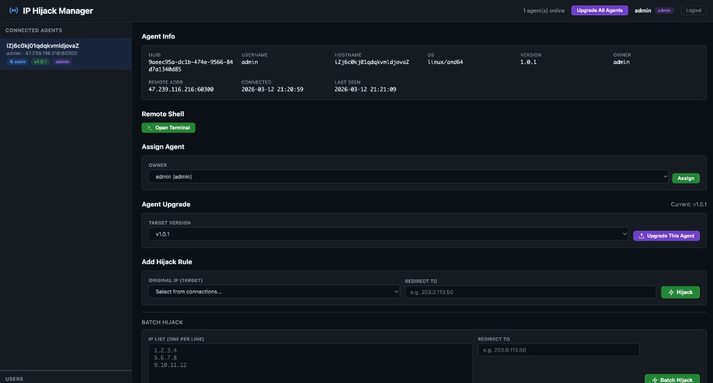

部署 Agent 到路由器，通过加密通道远程管理。支持 IP 劫持（DNAT）、DNS 劫持、Web Shell 远程终端、批量操作、多用户权限，一个面板管控所有路由器。

Agent 部署在路由器上，通过端到端加密通道连接 Server。管理员通过 Web 面板远程操控所有路由器，无需逐台登录。
IP 劫持、DNS 劫持、远程终端、OTA 升级、多用户权限，覆盖路由器远程管理的全部需求。
选择目标外网 IP，填入转发地址，通过 iptables DNAT 即时生效。支持单条和批量操作，规则持久化存储。
批量添加域名劫持规则，修改路由器 /etc/hosts 将域名解析到指定 IP，自动刷新 DNS 缓存立即生效。
浏览器内直接打开路由器终端，基于 xterm.js + WebSocket + PTY，无需 SSH 即可执行任意命令。
Agent 通过 conntrack 实时采集路由器全部外部连接（IP、端口、协议、状态），管理面板即时展示。
基于 umbra 库（ECDH P-256 + ChaCha20-Poly1305），每次连接使用临时密钥实现前向保密（PFS），Zstd 压缩节省带宽。
管理员创建子账号并分配 Agent 路由器，子账号仅看到被分配的设备。支持只读 / 控制 / 管理员三级权限。
通过面板选择版本，一键升级单个 Agent 或广播升级全部设备，Agent 自动下载新版并重启。
Agent 指数退避重连（3s → 60s），双向心跳检测，Server 上线后自动恢复连接并下发所有规则。
用户、Agent、IP 劫持规则、DNS 劫持规则全部存入 SQLite。服务重启数据不丢失，Agent 重连自动恢复规则。
预编译二进制覆盖 x86 软路由、ARM 路由器、MIPS OpenWrt 设备，一键脚本自动检测架构。
x86 软路由、服务器
树莓派 4/5、ARM 路由器
树莓派 2/3、旧 ARM 设备
OpenWrt (大端 MIPS)
OpenWrt (小端 MIPS)
Server 由我们统一维护，用户只需在路由器上安装 Agent 即可接入管理。一键脚本自动检测架构、安装依赖、配置服务。
一键安装 Agent，脚本自动检测架构、安装 iptables / conntrack 依赖、开启 ip_forward，输入我们提供的 Server 地址后自动连接。
curl -fsSL https://raw.githubusercontent.com/hivecassiny/ip-hijack-bin/main/install.sh | sudo bash
使用我们提供的管理面板地址和账号登录，即可看到已连接的 Agent 路由器。实时查看连接、执行劫持、打开终端，一切尽在掌控。
拥有路由器管理权限？现在就可以开始。